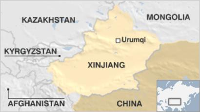
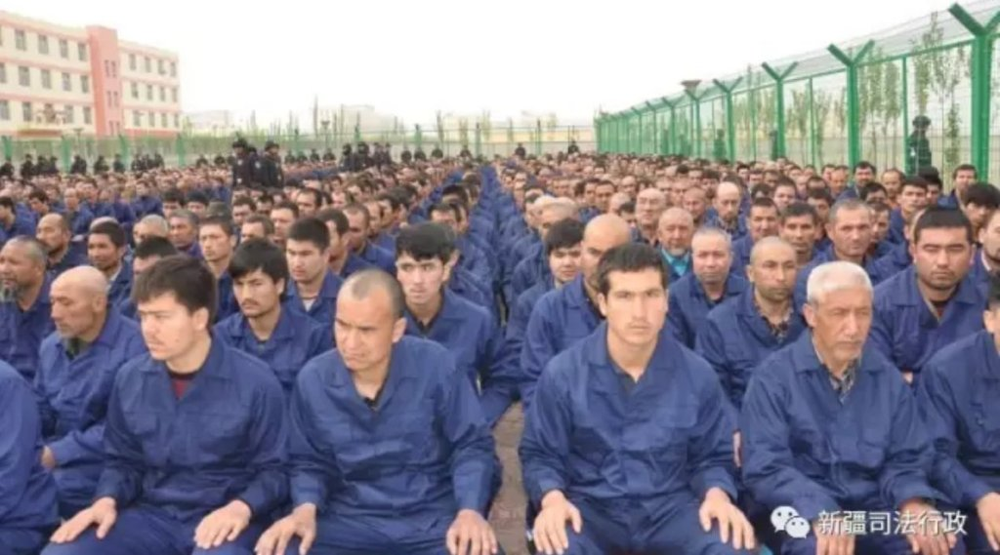
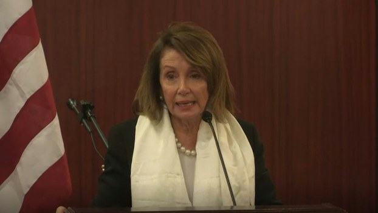

The Uighurs, an ethnic minority residing in Xinjiang primarily made up of Muslims have been the victims of intense surveillance, detention, and torture at the hands of the Chinese government. According to a report by the United Nations, It has been estimated that up until now, around a million people have been detained by the government in harsh internment camps. With such horror being inflicted on the Uighurs and seemingly no light at the end of the tunnel, one can’t help but wonder what led up to such a volatile situation.
To understand the present situation in Xinjiang, we must travel back to 20th century China to the Xinjiang region when the traditionally autonomous region began to see an increasing number of migrants made up almost entirely by the Hans, the ethnic majority in China. In recent times, mass migration has led the Uighurs to believe that their fundamental identity and culture were being compromised, giving rise to an atmosphere of tension and uncertainty in the region. To preserve their identity and to reestablish themselves, the Uighurs attempted to gain independence on two separate occasions, in 1933 and 1944. Despite being successful, their joy was short-lived as the region was quickly taken back under the Chinese Communist Party in 1949.
Even today, the Uighurs continue to face oppression by the Chinese government. Close monitoring, indoctrination, and torture just begin to scratch the surface of Chinese brutality.
Under the pretext of ensuring peace and stability and preventing the rise of Islamic extremism, authorities had begun to indiscriminately detain the Uighurs putting them in what journalists and former inmates refer to as ‘’concentration camps’’. Go out of the camps and Xinjiang is said to be a police state where residents are subjected to perpetual surveillance by the Chinese government. To make matters worse, in an attempt to erase all remnants of their identity and culture and imposing Chinese cultural unity on an unprecedented scale, all expressions of tradition have been criminalized with offenders being sent to the ‘concentration camps’. Strict restrictions on journalism in the area have engulfed it in such a mystery that it is no wonder that only recently has it come to the world’s attention.
When originally confronted about this issue, Chinese officials vehemently denied the existence of the brutality and the internment camps. However, not long after their statement, more information was unearthed with internal documents, satellite photography and testimonies all pointing towards the presence of internment camps.
Re-education Camps in Xianjiang
Mounting pressure and piling proof prompted the Chinese government to come clean and acknowledge the existence of the camps. The Chinese government now claimed that the establishment of such camps was imperative to combat Islamic terrorism and the growing separatist movement. Furthermore, authorities claim that ‘’vocational education had been put in place to train the locals and equip them with basic skills.
Although the government labeled it as ‘’vocational education’’, many accounts by detainees reveal that they had been subject to ‘’Physical and Psychological’’ torture in the camps and a close eye kept on whom they met via facial recognition cameras installed in many of the residences.
While the struggle for many members of the community goes on, the international response has been limited with several countries issuing statements highlighting their disdain and was critical of China’s actions
In the US, a congressional committee on China wrote that “Muslim ethnic minorities are being subjected to arbitrary detention, torture, egregious restrictions on religious practice and culture, and a digitized surveillance system so pervasive that every aspect of daily life is monitored.” and urged the Trump administration to place sanctions on those involved in the ‘’Ongoing human rights crisis in China’’.
Congresswoman issuing her statement expressing concern over Uighurs camps
With the continual and systemic violation of their rights by the Chinese government and a lack of tangible support from other countries, the future remains riddled with uncertainty for the Uighurs.